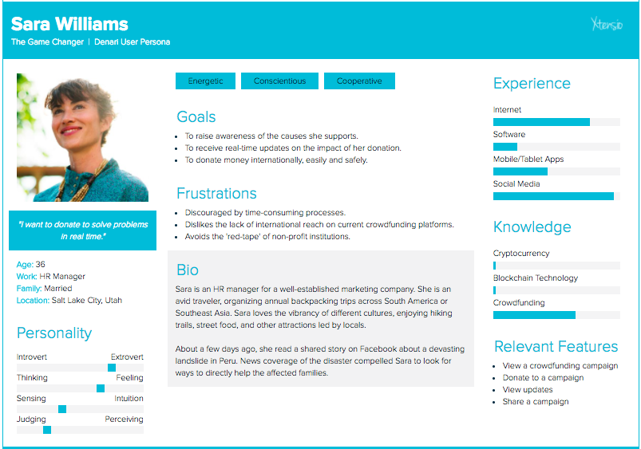
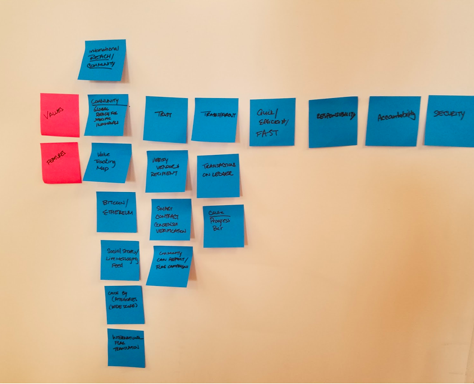
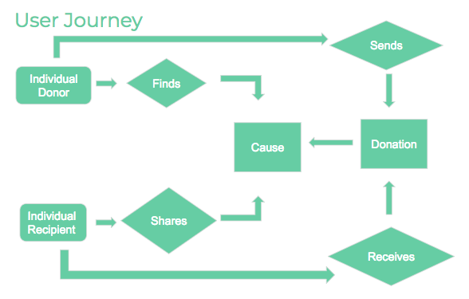

Denari is a universal crowdfunding platform built on the blockchain.
Create a platform that leverages blockchain technology and enables social impact, widespread adoption and increase awareness.
During the initial research phase, the team was able to identify existing crowdfunding platforms that presented various opportunities. While evaluating this competitive analysis, common themes emerged including: they charge high premiums in transaction fees, lack geographic presence and, most importantly, they exclude both the international and unbanked communities since most require a bank account.
This introduced our challenge statement:
“
How might we create a process that allows for secure, transparent, and borderless transfer of funds across the world?
By conducting stakeholder interviews and defining user personas, it was determined that most individuals do not trust donation-based platforms because they do not truly know how their funds are being spent. Blockchain allows for borderless transfer of funds while empowering the donor with accessibility and financial transparency as the funds are posted on the traceable public ledger. As a result, it was important to align the features of the platform to the high-value impact blockchain technology would bring which includes trust, transparency and reach. The MoSCoW matrix enabled us to weigh the features that was part of our critical path.
My role as a UX researcher and strategist involved conducting and gathering user interviews, synthesizing patterns and common themes, extrapolating key findings, setting up features vs. priority mapping using the MoSCoW method technique, producing a comprehensive sitemap diagramming the user journey. I was also involved in the creation of low-fidelity mobile wireframes which were later converted into high-fidelity prototypes.
Our finished prototype was that of a web & mobile experience that would be accessible across the globe. Features include a digital donor and recipient wallet, a value tracking map, social sharing component, and campaign progress bar for recipients.